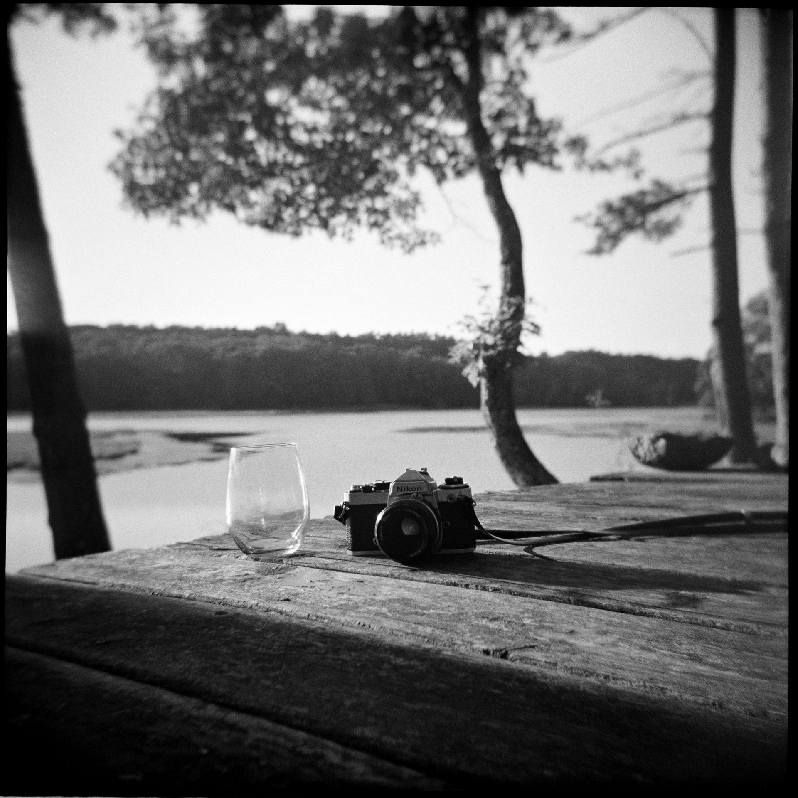
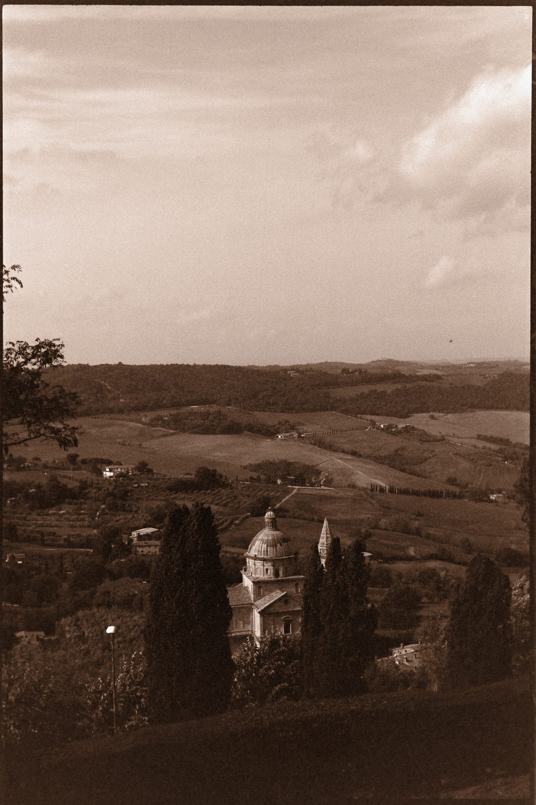
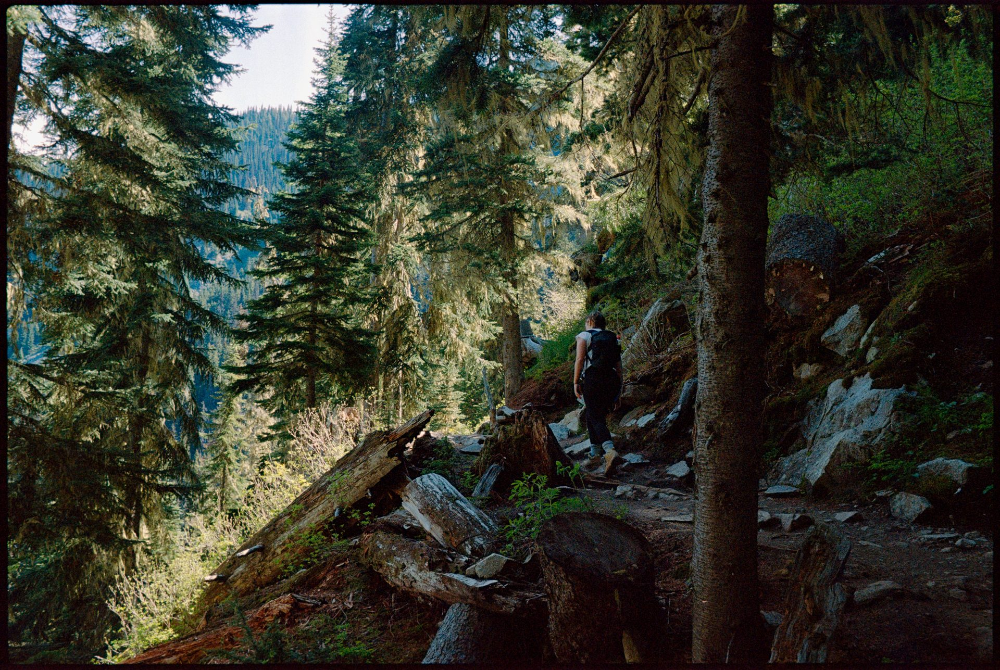
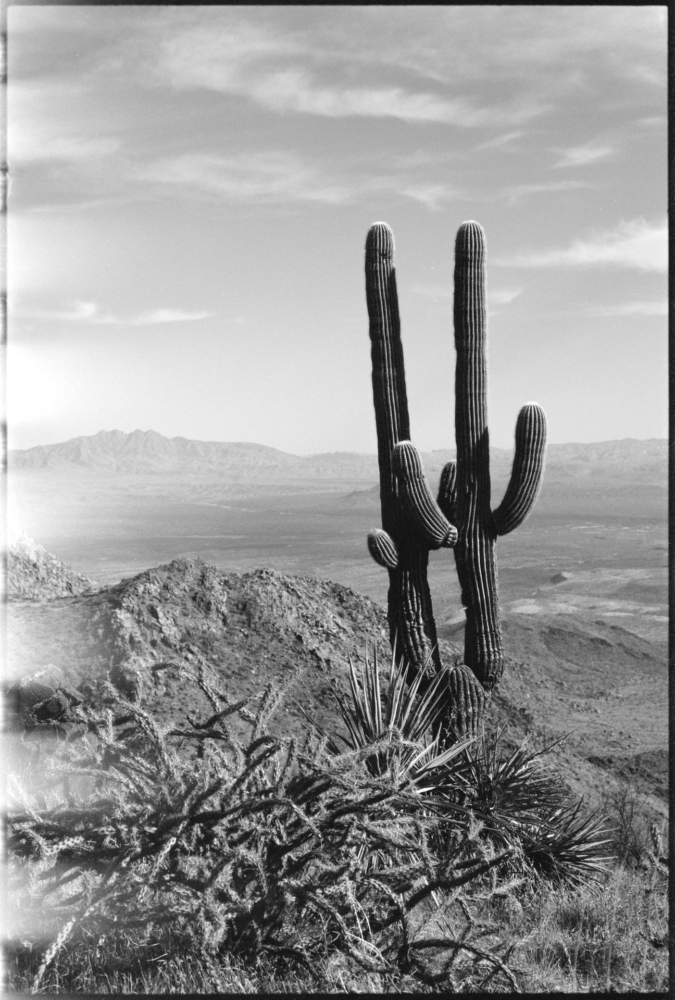
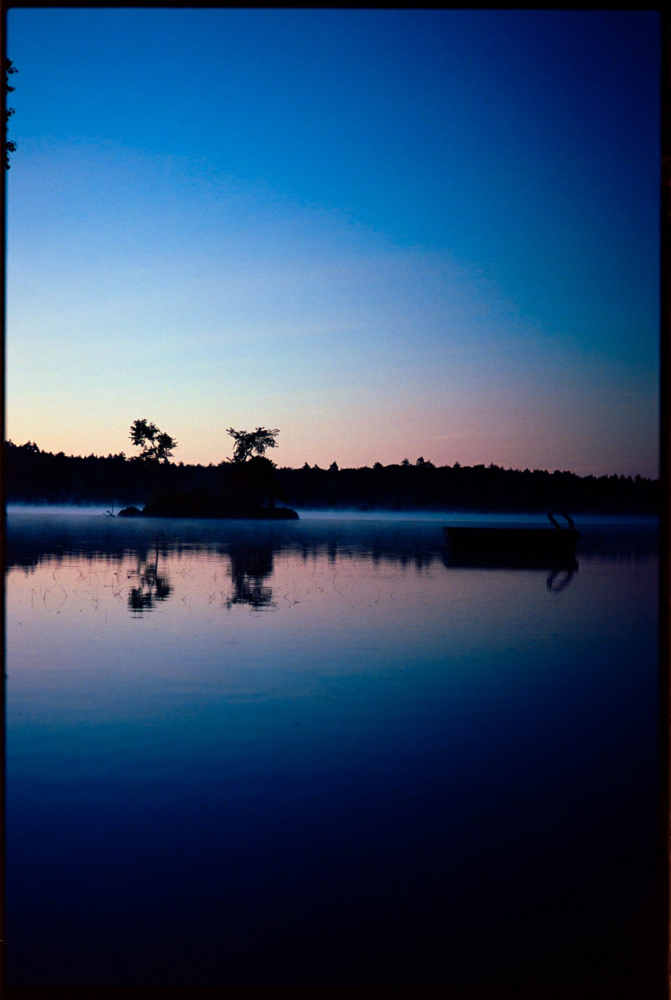

My Brother Has Been Shooting Film for Years. I Finally Built Him a Website.
My brother Tom has been shooting film photography for as long as I can remember. Not digital — actual 35mm film, through an actual camera, developed at an actual lab. He's dragged that Nikon FE through Paris, the Amalfi Coast, Tuscany, Whistler, Maine, Arizona, and all over central Ohio. He shoots landscapes, travel, portraits, street scenes, flowers, and the occasional whiskey-and-cigar still life that somehow looks like it belongs in a gallery.
His Instagram handle is @tibetanplatoz. His photos have hundreds of likes. People ask him regularly if he does portrait sessions, what film he uses, how to book him.
What he didn't have was a website.

The Ask
Tom is a photographer, not a web developer. He'd been meaning to set something up for years — somewhere he could direct people when they asked about portrait sessions, somewhere that showed his work in a way Instagram doesn't quite allow. But it never happened, because building a website from scratch is a project, and projects take time, and Tom stays busy.
At some point he mentioned it to me. I'd already built a few sites using Claude Code — my own personal site, a site for my mom's law firm, a student council page for my MBA program. I knew what it could do. So I told him I'd handle it.
The whole thing took one evening.
The Design Problem
The interesting challenge with a film photographer's website isn't the layout — it's the feeling. Film photography has a specific aesthetic. It's warm and slightly imperfect. It breathes. It doesn't look like an app. If you build a film photographer's website and it feels sleek and modern and polished, you've missed the point entirely.
So the first thing I told Claude was: this needs to feel like film. Not like a tech product. Not like a portfolio on a template. Like the inside of a darkroom that someone has made very comfortable.
"Cream background, not white. Warm tones throughout. Georgia serif font for the body text. And I want a subtle film grain overlay on the whole page — just a hint of texture, like you're looking at something analog."
Claude built it exactly that way. The background is a warm cream. The grain is a CSS SVG filter sitting a few percent opaque over the entire page — you don't consciously notice it, but without it the site would feel wrong. The nav is minimal. The photos do the talking.


What the Site Actually Covers
Tom does portrait sessions — one hour outdoors, two rolls of 35mm film, developed at Midwest Photo in Columbus, scanned images delivered in about two weeks. He shoots at golden hour, the last hour or so before sunset, because that's when natural light looks the way film was made to capture it. Hayden Falls, Griggs Reservoir, Schiller Park, Hocking Hills if you want to make a day of it.
He also sells fine art prints made directly from his negatives. And he writes — there's an essay on the site called "Film and Why It Matters" that explains, in his own words, why he still shoots on a medium that requires patience, uncertainty, and occasionally winding back a roll you accidentally opened in daylight.
If I'm being honest, that essay is one of my favorite things he's written. He talks about how shooting film slows you down in a way that forces you to actually look at what you're pointing the camera at. With digital, you take 200 shots and figure out which one worked later. With film, you have 36 frames and they cost money. You think before you shoot. The photos are better because of the constraint.

The Pattern I Keep Noticing
This is the third website I've built for someone in my family. My mom's estate planning law practice. My brother's photography. My own personal site. Each one took one evening. Each one would have taken months — or just never happened — if I'd had to learn to code or hire someone.
What I keep noticing is that the bottleneck was never the technical part. Tom had the photos. My mom had 44 years of client work. I had a Chamber speech and a year of events. The content existed. The work existed. What was missing was just a way to put it somewhere that looked right and worked correctly and showed up when someone searched for it.
That gap used to require a developer and a budget and weeks of back-and-forth. Now it requires one evening and the ability to describe what you want in plain English. I genuinely don't know what to make of that, except that I'm glad it's available, and that my brother finally has somewhere to send people when they ask him about his photos.


See Tom's Photography Website →
Tom is based in Columbus, Ohio and available for portrait sessions throughout central Ohio. You can also find him on Instagram at @tibetanplatoz, connect on LinkedIn, or reach him directly at lotozot@gmail.com.
← Back to Blog